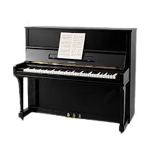
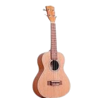

Скрипка

Скрипка — это струнный смычковый инструмент. Обладает мелодичным и выразительным звучанием.
Я увлекаюсь музыкой и игрой на разных инструментах. Это помогает мне расслабляться и развиваться.
Скрипка — это струнный смычковый инструмент. Обладает мелодичным и выразительным звучанием.

Пианино — клавишный инструмент, подходящий для обучения и концертов.

Гитара — популярный инструмент, используемый в разных жанрах музыки.

Укулеле — компактный гавайский инструмент с мягким звучанием.